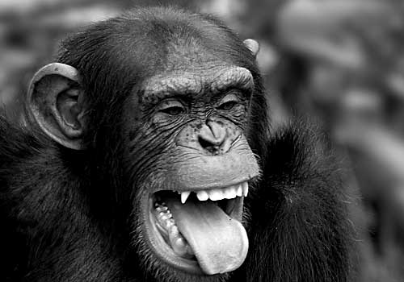

While inextricably associated in the public mind with Tarzan, Cheeta as a character was a product of the movies, never appearing in any of the original Tarzan novels by Edgar Rice Burroughs. Cheeta (probably born in 1932) appeared in numerous movies and television shows, most famously in the many Hollywood Tarzan films of the 1930s and 1940s, in which he portrayed a fictional chimpanzee of the same name.
In retirement Cheeta lives at a primate sanctuary called Creative Habitats and Enrichment for Endangered and Threatened Apes (CHEETA) in Palm Springs, California. He watches television and makes abstract paintings which are sold to benefit primate-related charities. He often watches his old films with his grandson, Jeeter. He also enjoys leafing through books and 'plays' the piano.

Cheeta's place as a Holywood screen legend is indisputable. His lengthy career has included numerous Tarzan appearances including: 'Tarzan Escapes' (1936), in which we get our first glimpse of the infamous Tarzan treehouse; 'Tarzan's New York Adventure' (1942), a foray into the urban jungle; and 'Tarzan and the Mermaids' (1948), sadly one trip too many for the Tarzan brand.
Despite his considerable contribution to Hollywood as an ape thespian (and a long-running petition by his many admirers) Cheeta is yet to be awarded a star on the Hollywood Walk of Fame.
As Johnny once told me, "Soon as they start calling you an Immortal, you start worrying about dying."
Cheeta
The first film of the long-running franchise, 'Tarzan the Ape Man' - featuring Johnny Weissmuller as Tarzan and Maureen O'Sullivan as Jane (the original screen couple) - inaugurated a series of close to one hundred movies. Trivia: The Cheeta we know and love today first adopted his long-running role in the third of the Johnny Weissmuller Tarzan films.
A regrettable addition to the Tarzon canon, 'Tarzan and the Mermaids' marked the beginning of the end of Tarzan and Cheeta's classic adventures. Set in Aquatania, a forbidden island land ruled over by a corrupt high priest, Tarzan again saved the day, but sadly destroyed the Holywood myth in the process. Trivia: Cheeta states in his autobiography, that this is the film he regrets making the most.
The Famous Primates web site is a Web Standardistas production.
XHTML + CSS released under a Creative Commons Attribution 3.0 license.
Photography Copyright iStockphoto